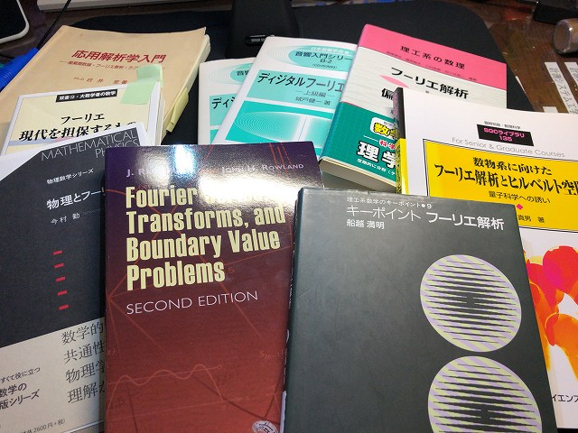

結局加工実習ではOSに依存しないFreeCADにしました。CAMは調べてなんとかいけそうです。工学実験のテーマ9と10のレポート用のテキストを心を無にしながら書画カメラでスキャンします。
CAMのやり方もOK
CADも手が覚えてきました

図面も繰り返し練習

スキャンは書画カメラ導入
テーマ9と
10
10の教科書は准教授の人の私物でコレはアカンやつです
| ・ スキャン (R02.05.22) | |||
結局加工実習ではOSに依存しないFreeCADにしました。CAMは調べてなんとかいけそうです。工学実験のテーマ9と10のレポート用のテキストを心を無にしながら書画カメラでスキャンします。 |
|||
|
CAMのやり方もOK |
CADも手が覚えてきました | ||
|
図面も繰り返し練習 |
スキャンは書画カメラ導入 | ||
|
テーマ9と |

10 | ||
|
10の教科書は准教授の人の私物でコレはアカンやつです |
|||